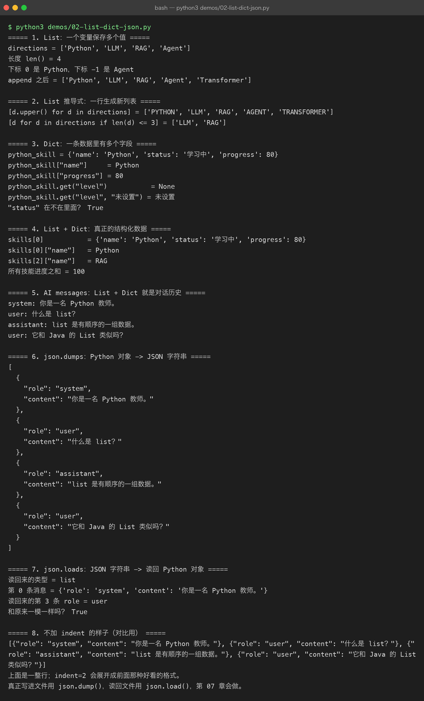
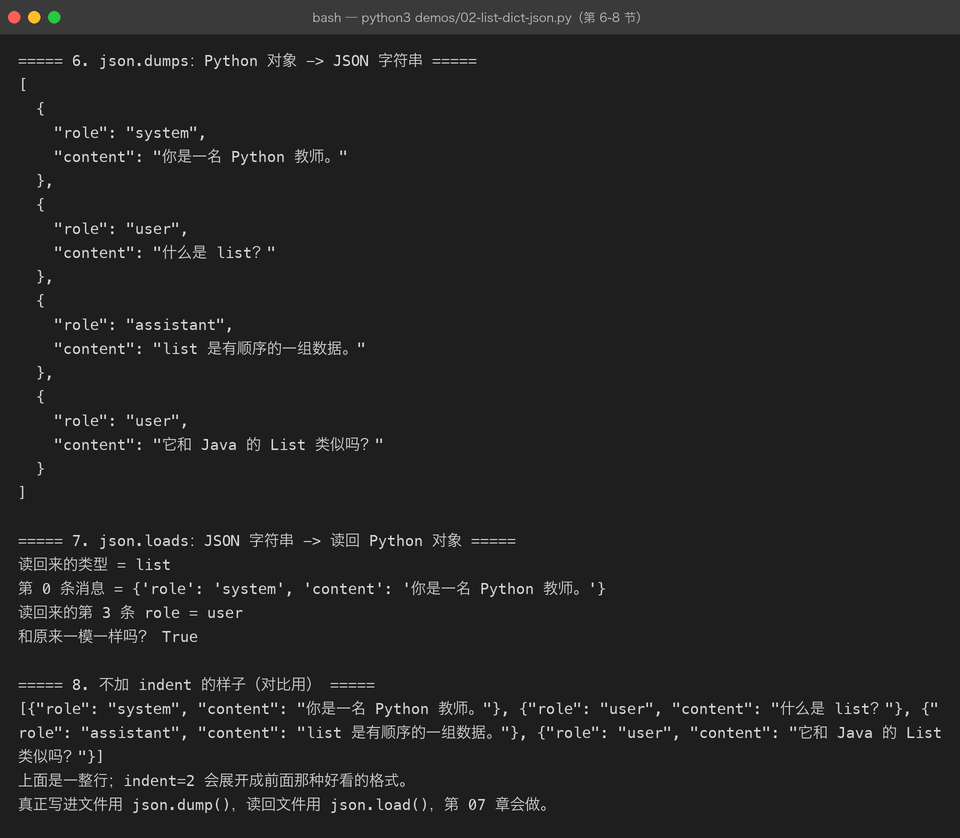

Lesson 02 — List / Dict → JSON → AI Messages
AI Engineer Journey · Project 01 — Python AI CLI Assistant 学习方式：Project-Based Learning【项目驱动学习】 本章项目：AI Engineer 学习档案升级版 + CLI 对话记录器
1. 这一次我们要解决什么问题？
上一章，我们做出了一个简单的：
AI Engineer 学习档案生成器
它只能保存一个人的一些信息：
姓名
职业
学习时间
学习方向现在需求升级。
我们希望程序能够做到：
一个人
↓
多个学习方向
↓
多条学习记录
↓
保存学习记录
↓
查看历史记录然后进一步：
用户
↓
输入问题
↓
程序保存消息
↓
多条消息组成对话历史
↓
最终形成 AI API 的 messages于是我们会自然遇到：
List【列表】
Dict【字典】
List + Dict
Nested Data【嵌套数据】
JSON
messages
system / user / assistant
Context【上下文】2. 先从项目需求出发
假设现在的学习档案需要保存：
姓名：Beiluo
职业：Java 开发工程师
学习方向：Python
学习方向：LLM
学习方向：RAG
学习方向：Agent上一章的思路可能是：
learning_direction = "Python"但现在有多个方向。
那问题来了：
一个变量怎么保存多个值？
3. 第一个新需求：保存多个学习方向
最直接的想法：
direction1 = "Python"
direction2 = "LLM"
direction3 = "RAG"
direction4 = "Agent"这当然能工作。
但马上出现问题：
如果有 100 个学习方向呢？你难道写：
direction1
direction2
direction3
...
direction100显然不合理。
我们需要一种：
一个变量保存多个值
的数据结构。
于是遇到：
List【列表】
4. List：一次保存多个值
修改项目：
directions = [
"Python",
"LLM",
"RAG",
"Agent"
]现在：
directions
↓
["Python", "LLM", "RAG", "Agent"]一个变量保存了多个值。
5. List 的第一个特点：有顺序
例如：
directions = [
"Python",
"LLM",
"RAG",
"Agent"
]可以通过索引访问：
print(directions[0])
print(directions[1])
print(directions[2])
print(directions[3])输出：
Python
LLM
RAG
AgentPython 的索引从 0 开始。
0 → Python
1 → LLM
2 → RAG
3 → Agent6. 为什么顺序很重要？
继续回到我们的项目。
假设学习路线是：
Python
↓
LLM
↓
RAG
↓
Agent顺序本身就是信息。
所以 List 非常适合：
保存有顺序的一组数据。
这以后会直接对应：
消息历史
学习步骤
工具列表
Token 列表
检索结果7. 给 List 增加数据
用户可能后来又学习：
Transformer我们不需要重新创建整个 List：
directions = [
"Python",
"LLM",
"RAG",
"Agent"
]
directions.append("Transformer")现在：
print(directions)得到：
['Python', 'LLM', 'RAG', 'Agent', 'Transformer']append()：
向 List 尾部添加一个元素。
8. 项目第一个升级
现在重新写学习档案：
name = "Beiluo"
role = "Java 开发工程师"
directions = [
"Python",
"LLM",
"RAG",
"Agent"
]
print(f"姓名：{name}")
print(f"职业：{role}")
print(f"学习方向：{directions}")虽然能跑，但输出不好看：
学习方向：['Python', 'LLM', 'RAG', 'Agent']我们希望：
学习方向：
1. Python
2. LLM
3. RAG
4. Agent于是又遇到了上一章学过的：
for组合起来：
for direction in directions:
print(direction)9. List + for
完整：
directions = [
"Python",
"LLM",
"RAG",
"Agent"
]
for direction in directions:
print(f"- {direction}")输出：
- Python
- LLM
- RAG
- Agent你现在已经开始把不同知识连接起来：
List
+
for这就是我们学习 AI Engineer Journey 的方式：
不是一章只学一个孤立语法，而是让旧知识和新知识不断组合。
10. 新问题来了：只有名字还不够
现在我们的学习方向：
directions = [
"Python",
"LLM",
"RAG",
"Agent"
]但我们还想保存：
方向
当前状态
学习进度比如：
Python
已完成
80%
LLM
学习中
20%
RAG
未开始
0%一个字符串显然不够。
我们需要：
一条数据里面保存多个有名字的字段。
11. 遇到 Dict
Python 提供：
Dict【字典】
例如：
python_skill = {
"name": "Python",
"status": "学习中",
"progress": 80
}现在：
python_skill
│
├── name → Python
├── status → 学习中
└── progress → 80Dict 使用：
key → value
键 → 值12. 访问 Dict
例如：
print(python_skill["name"])
print(python_skill["status"])
print(python_skill["progress"])结果：
Python
学习中
80这里和上一章变量不一样。
以前：
name = "Beiluo"直接通过：
name访问。
现在：
python_skill = {
"name": "Python",
"status": "学习中",
"progress": 80
}通过：
python_skill["name"]访问。
13. Java 开发者怎么理解 Dict？
你可以先类比：
Python dict
≈
Java MapPython：
python_skill = {
"name": "Python",
"status": "学习中",
"progress": 80
}Java：
Map<String, Object> pythonSkill = new HashMap<>();
pythonSkill.put("name", "Python");
pythonSkill.put("status", "学习中");
pythonSkill.put("progress", 80);但记住：
这里只是帮助迁移思维，两者的类型系统和底层实现并不完全相同。
14. List 和 Dict 终于开始组合
我们现在有：
python_skill = {
"name": "Python",
"status": "学习中",
"progress": 80
}
llm_skill = {
"name": "LLM",
"status": "学习中",
"progress": 20
}那多个技能怎么办？
可以：
skills = [
python_skill,
llm_skill
]也可以直接写：
skills = [
{
"name": "Python",
"status": "学习中",
"progress": 80
},
{
"name": "LLM",
"status": "学习中",
"progress": 20
}
]这就是：
List + Dict
15. 这个结构非常重要
现在：
skills = [
{
"name": "Python",
"status": "学习中",
"progress": 80
},
{
"name": "LLM",
"status": "学习中",
"progress": 20
}
]数据关系：
skills
↓
List
│
├── Dict
│ ├── name
│ ├── status
│ └── progress
│
└── Dict
├── name
├── status
└── progress这就是：
结构化数据【Structured Data】
16. 为什么 AI 开发特别喜欢这种结构？
因为现实中的 AI 应用有大量“对象列表”。
例如：
用户列表
订单列表
搜索结果
文档列表
工具列表
消息列表一条数据有多个字段：
name
status
content
id
metadata多个数据：
List所以：
List + Dict会成为 Python AI 开发中非常常见的数据结构。
17. 项目继续升级：学习记录
现在我们希望保存：
2026-09-17
学习 Python
学习 2 小时
2026-09-18
学习 LLM
学习 3 小时我们可以设计成：
records = [
{
"date": "2026-09-17",
"topic": "Python",
"hours": 2
},
{
"date": "2026-09-18",
"topic": "LLM",
"hours": 3
}
]现在你应该能读懂：
records
↓
List
↓
每一条记录
↓
Dict
↓
date / topic / hours18. 用 for 遍历结构化数据
for record in records:
print(
f"{record['date']}："
f"学习 {record['topic']}，"
f"{record['hours']} 小时"
)输出：
2026-09-17：学习 Python，2 小时
2026-09-18：学习 LLM，3 小时注意这里出现了：
record["topic"]这就是：
List
↓
取出一个 Dict
↓
读取 Dict 中的字段19. 项目继续升级：数据越来越结构化
现在我们的项目已经有：
profile = {
"name": "Beiluo",
"role": "Java 开发工程师"
}以及：
skills = [
{
"name": "Python",
"status": "学习中",
"progress": 80
},
{
"name": "LLM",
"status": "学习中",
"progress": 20
}
]以及：
records = [
{
"date": "2026-09-17",
"topic": "Python",
"hours": 2
}
]这时候出现一个新问题：
这些数据如果想保存到文件怎么办？
20. 为什么需要 JSON？
假设程序今天关闭。
我们内存中的：
skills也就没了。
所以我们需要：
把 Python 数据保存下来。
一种非常常见的方式就是：
JSON【JavaScript Object Notation，JavaScript 对象表示法】
JSON 是一种广泛使用的数据交换格式。
例如：
{
"name": "Beiluo",
"role": "Java 开发工程师"
}它非常适合表达结构化数据。
21. Python Dict 和 JSON 很像
Python：
profile = {
"name": "Beiluo",
"role": "Java 开发工程师"
}JSON：
{
"name": "Beiluo",
"role": "Java 开发工程师"
}看起来非常接近。
但：
Python Dict 和 JSON 不是同一个东西。
Python Dict 是 Python 程序中的数据结构。
JSON 是一种数据表示 / 交换格式。
可以先理解成：
Python 对象
↓
序列化
↓
JSON
↓
保存 / 网络传输22. Python 如何把 Dict 转成 JSON？
Python 自带：
import json然后：
profile = {
"name": "Beiluo",
"role": "Java 开发工程师"
}
json_text = json.dumps(
profile,
ensure_ascii=False,
indent=2
)
print(json_text)输出：
{
"name": "Beiluo",
"role": "Java 开发工程师"
}json.dumps()：
把 Python 数据序列化为 JSON 字符串。
23. JSON 再转回 Python
如果我们得到 JSON：
json_text = """
{
"name": "Beiluo",
"role": "Java 开发工程师"
}
"""可以：
profile = json.loads(json_text)然后：
print(profile["name"])输出：
Beiluojson.loads()：
把 JSON 数据解析成 Python 对象。
记住：
dumps
Python
↓
JSON
loads
JSON
↓
Python可以把它暂时记成：
dump= 导出去load= 加载回来


24. 项目第一次真正保存数据
我们现在做：
import json
profile = {
"name": "Beiluo",
"role": "Java 开发工程师"
}
with open("profile.json", "w", encoding="utf-8") as file:
json.dump(
profile,
file,
ensure_ascii=False,
indent=2
)运行以后，会得到：
profile.json内容：
{
"name": "Beiluo",
"role": "Java 开发工程师"
}现在：
程序
↓
Python Dict
↓
JSON
↓
文件数据就可以保存下来。
25. 现在终于进入 AI
我们之前说：
Python 数据结构在 AI 里为什么这么重要？
现在终于可以看到一个最典型的例子：
messages
假设我们做一个 AI 聊天程序。
第一句话：
用户：你好程序需要保存这条消息。
可以设计：
message = {
"role": "user",
"content": "你好"
}这一条消息是：
Dict
26. 多条消息怎么办？
假设：
用户：你好
AI：你好，有什么可以帮助你？
用户：什么是 Python？我们可以：
messages = [
{
"role": "user",
"content": "你好"
},
{
"role": "assistant",
"content": "你好，有什么可以帮助你？"
},
{
"role": "user",
"content": "什么是 Python？"
}
]注意：
messages
↓
List
↓
每条消息
↓
Dict这就是 AI API 中非常重要的数据结构。
27. 第一次理解 role
为什么不直接：
messages = [
"你好",
"你好，有什么可以帮助你？",
"什么是 Python？"
]因为模型还需要知道：
这句话是谁说的？
所以增加：
role例如：
user表示用户。
assistant表示助手 / 模型。
后面还会有：
system表示系统消息。
28. system
例如：
{
"role": "system",
"content": "你是一名 Python 教师，请用适合初学者的方式回答。"
}它表达：
模型在本次对话中应该遵循的行为和上下文。
29. user
例如：
{
"role": "user",
"content": "什么是 list？"
}表示：
用户当前的问题 / 请求。
30. assistant
例如：
{
"role": "assistant",
"content": "list 是 Python 中保存多个元素的数据结构。"
}表示：
模型此前生成的回答。
31. 完整 messages
我们现在组合：
messages = [
{
"role": "system",
"content": "你是一名 Python 教师。"
},
{
"role": "user",
"content": "什么是 list？"
},
{
"role": "assistant",
"content": "list 是 Python 中用于保存多个元素的数据结构。"
},
{
"role": "user",
"content": "它和 Java 的 List 类似吗？"
}
]这段代码非常重要。
你现在已经第一次看到：
真正的 AI 数据结构
32. 为什么 messages 是 List + Dict？
拆开看：
messages = [...]messages：
List
里面：
{
"role": "...",
"content": "..."
}每一条：
Dict
所以：
messages
↓
List
↓
Dict
↓
role / content这不是我们人为为了教学设计出来的。
这是现代 AI 应用里非常常见的数据组织方式。
33. Context【上下文】第一次出现
模型在处理：
它和 Java 的 List 类似吗？时，如果只看到这一句话，就不知道：
“它”到底指什么。
但是如果把历史消息一起发送：
system
user
assistant
user模型就拥有了更多上下文。
所以可以先理解：
Context【上下文】就是模型当前推理时能够看到的信息。
在我们这个阶段：
messages
↓
历史消息
↓
组成当前请求的一部分上下文34. 把 Python 数据结构和 AI 联系起来
现在回头看：
List解决：
我要保存很多条消息。
Dict解决：
我要描述一条消息。
List + Dict解决：
我要保存整个对话历史。
JSON解决：
我要把这些结构化数据变成方便保存 / 传输的数据格式。
messages解决：
我要把对话历史组织成模型 API 能理解的消息结构。
这样学习就串起来了。
35. 现在建立完整路线描述
整个数据流：
用户输入
↓
Python 字符串
↓
封装为 Dict
↓
加入 messages List
↓
多个 Dict 形成完整消息历史
↓
序列化为 JSON
↓
HTTP API 请求
↓
LLM联系描述
用户输入最开始只是 Python 中的字符串。程序为了让这条数据具有明确含义，会把它封装成包含 role 和 content 的 Dict。多条消息按照发生顺序加入 List，就形成 messages。这个结构可以进一步转换成 JSON，从而通过 HTTP 请求发送给 LLM API。模型收到这些消息后，就能根据角色和历史内容构建当前请求的上下文。
注意：
本章先理解数据结构和数据流。真正发送 HTTP 请求，我们在后面的 HTTP / API 课程中正式实现。
这样不会跳知识。
36. 项目升级：CLI 对话记录器
现在我们做本章的小项目：
Project 01 v0.2 — Conversation Recorder
需求：
用户输入：
你好
程序：
保存消息
用户输入：
我正在学习 Python
程序：
保存消息
用户输入：
什么是 dict？
程序：
保存消息最终：
messages = [
{
"role": "user",
"content": "你好"
},
{
"role": "user",
"content": "我正在学习 Python"
},
{
"role": "user",
"content": "什么是 dict？"
}
]现在还没有真正连接大模型。
我们只是在练：
如何构建 AI 应用需要的数据结构。
37. 第一个版本
messages = []
while True:
user_input = input("You: ")
if user_input == "/exit":
break
message = {
"role": "user",
"content": user_input
}
messages.append(message)
print("\n========== Messages ==========")
for message in messages:
print(
f"{message['role']}: "
f"{message['content']}"
)运行：
You: 你好
You: 我正在学习 Python
You: 什么是 dict？
You: /exit结果：
========== Messages ==========
user: 你好
user: 我正在学习 Python
user: 什么是 dict？现在你已经写出了第一个：
AI Chat 数据层雏形。
38. 项目升级：模拟 assistant
现在手动加入一个回答：
messages = []
user_message = {
"role": "user",
"content": "什么是 list？"
}
messages.append(user_message)
assistant_message = {
"role": "assistant",
"content": "list 是 Python 中保存多个元素的数据结构。"
}
messages.append(assistant_message)最后：
for message in messages:
print(f"{message['role']}: {message['content']}")结果：
user: 什么是 list？
assistant: list 是 Python 中保存多个元素的数据结构。这已经非常接近我们以后真正调用 LLM API 时使用的数据了。
39. 项目升级：加入 system
messages = [
{
"role": "system",
"content": "你是一名 Python 教师。"
}
]用户输入：
user_message = {
"role": "user",
"content": "什么是 dict？"
}
messages.append(user_message)模拟模型：
assistant_message = {
"role": "assistant",
"content": "dict 是 Python 中用于保存键值对的数据结构。"
}
messages.append(assistant_message)最终：
system
↓
user
↓
assistant这就是一个最小对话上下文。
40. 把 messages 保存成 JSON
现在我们可以：
import json
with open(
"messages.json",
"w",
encoding="utf-8"
) as file:
json.dump(
messages,
file,
ensure_ascii=False,
indent=2
)得到：
messages.json里面：
[
{
"role": "system",
"content": "你是一名 Python 教师。"
},
{
"role": "user",
"content": "什么是 dict？"
},
{
"role": "assistant",
"content": "dict 是 Python 中用于保存键值对的数据结构。"
}
]现在整个链路变成：
用户
↓
Dict
↓
messages List
↓
JSON
↓
文件41. 本章项目结构
本章建议：
projects/
└── 01-python-ai-cli/
└── 02-list-dict/
├── README.md
├── lesson.md
├── demo/
│ ├── 01-list.py
│ ├── 02-dict.py
│ ├── 03-list-dict.py
│ ├── 04-json.py
│ ├── 05-messages.py
│ └── 06-conversation.py
│
└── exercises/
└── README.md建议 Demo 的演进顺序就是：
01-list
↓
02-dict
↓
03-list-dict
↓
04-json
↓
05-messages
↓
06-conversation这就是本章的“项目轨迹”。
42. 本章知识地图
Python
│
├── List
│ │
│ └── 保存多个元素
│
├── Dict
│ │
│ └── key → value
│
├── List + Dict
│ │
│ └── 结构化数据
│
├── JSON
│ │
│ ├── dumps
│ └── loads
│
└── AI Messages
│
├── system
├── user
└── assistant
│
↓
Context43. Java → Python 对照
| 场景 | Java | Python |
|---|---|---|
| 多个值 | List | list |
| 键值对 | Map | dict |
| 多个结构化对象 | List<Map<...>> | list[dict] |
| JSON | Jackson 等 | json |
| 消息集合 | List<Map<...>> | list[dict] |
例如：
Java 思维：
List<Map<String, String>> messages;Python：
messages = [
{
"role": "user",
"content": "你好"
}
]你现在应该能够看懂这种 AI API 数据结构了。
44. 本章最重要的三个理解
第一
List不是为了背 API。
而是：
一个变量保存多个有顺序的数据。
第二
Dict不是简单的 Map 替代品。
而是：
描述一个结构化对象，让数据具有明确字段。
第三
List + Dict是很多 AI 应用数据结构的基础。
例如：
messages
tools
documents
search_results
metadata都会大量使用类似结构。
45. 常见坑
坑 1：把 Dict 当成 List
错误：
message[0]如果：
message = {
"role": "user",
"content": "你好"
}应该：
message["role"]因为 Dict 通过 key 访问。
坑 2：把 List 当成 Dict
如果：
messages = [...]你不能：
messages["role"]应该先取其中一条：
messages[0]["role"]因为：
messages
↓
List
↓
第 0 个 Dict
↓
role坑 3：认为 JSON 就是 Python Dict
不是。
Python Dict是程序内部的数据结构。
JSON是用于表示 / 交换数据的格式。
两者可以相互转换。
坑 4：看到 messages 就觉得是模型记忆
更准确的理解：
messages只是一个 Python 数据结构。
模型是否能看到哪些历史信息，取决于：
最终哪些内容被放进模型当前请求的上下文。
46. 主动回忆
现在不要重新看正文，先回答。
Q1
为什么：
directions = ["Python", "LLM", "RAG"]适合使用 List？
Q2
为什么：
skill = {
"name": "Python",
"progress": 80
}适合使用 Dict？
Q3
下面：
skills = [
{
"name": "Python",
"progress": 80
},
{
"name": "LLM",
"progress": 20
}
]请说明：
skills
skills[0]
skills[0]["name"]
skills[1]["progress"]分别是什么。
Q4
Python Dict 和 JSON 是不是同一个东西？
为什么？
Q5
为什么 AI 的 messages 经常设计成：
[
{
"role": "...",
"content": "..."
}
]而不是简单的：
[
"你好",
"什么是 Python？"
]Q6
你用“聊天记录”的例子解释：
List
Dict
messages
Context四者是什么关系？
47. 代码挑战
不要看前面的完整代码，自己实现：
Conversation Recorder v0.1
要求：
程序启动后：
System：
You：用户不断输入。
当输入：
/exit程序退出。
然后把所有用户消息保存成：
messages = [
{
"role": "user",
"content": "..."
}
]最后打印：
========== Conversation ==========
user: ...
user: ...
user: ...
===================================48. Challenge 2：加入 Assistant
再增加：
assistant_message = {
"role": "assistant",
"content": "这是一个模拟回答"
}让最终结构变成：
system
user
assistant
user
assistant
...先不调用真正的模型。
49. Challenge 3：保存 JSON
让程序退出时自动保存：
messages.json然后重新运行程序时：
messages.json
↓
json.loads()
↓
Python messages恢复历史。
这就是我们第一次做：
持久化【Persistence】
的雏形。
50. 本章完成标准
不要以：
“我看完 Lesson 02 了。”
作为完成标准。
你至少应该达到：
Level 1
能够看懂：
skills = ["Python", "LLM"]Level 2
能够自己创建：
skill = {
"name": "Python",
"progress": 80
}Level 3
能够组合：
skills = [
{...},
{...}
]Level 4
能够自己使用：
json.dumps()
json.loads()Level 5
能够自己创建：
messages = [
{
"role": "system",
"content": "..."
},
{
"role": "user",
"content": "..."
}
]Level 6
不用看教程，独立写出：
Conversation Recorder v0.1
Level 7
能够向别人解释：
为什么 AI API 的消息结构天然适合用
list + dict表示？
如果你能做到这一步，这一章才算真正掌握。
51. 本章与下一阶段的连接
现在我们已经完成：
Python
↓
List
↓
Dict
↓
JSON
↓
messages下一步不是立即跳 Transformer。
而是继续回答：
这些
messages到底怎么发送给 AI？
于是下一批 Python 知识就会自然出现：
Function
↓
Module
↓
JSON
↓
HTTP
↓
API
↓
LLM API也就是说，下一阶段会开始把：
Python 数据结构真正连接到：
大模型 API52. 本章一句话总结
List 负责组织多条有顺序的数据，Dict 负责描述一条结构化数据，二者组合起来可以表达聊天消息；JSON 则让这些结构化数据能够被保存和交换，而
messages正是这种数据结构在大模型应用中的典型应用。
53. AI Engineer Journey 当前进度
Project 01 — Python AI CLI Assistant
✅ Lesson 01
Python Variables / Types / Input / Output
🔄 Lesson 02
List / Dict / JSON / AI Messages
⬜ Lesson 03
Condition / Loop本章真正完成后，再进入：
Lesson 03 — Condition / Loop：让 AI CLI Assistant 开始“运行起来”
下一章我们会继续用 Conversation Recorder / AI CLI Assistant 做项目，不会突然切换成纯语法讲解。